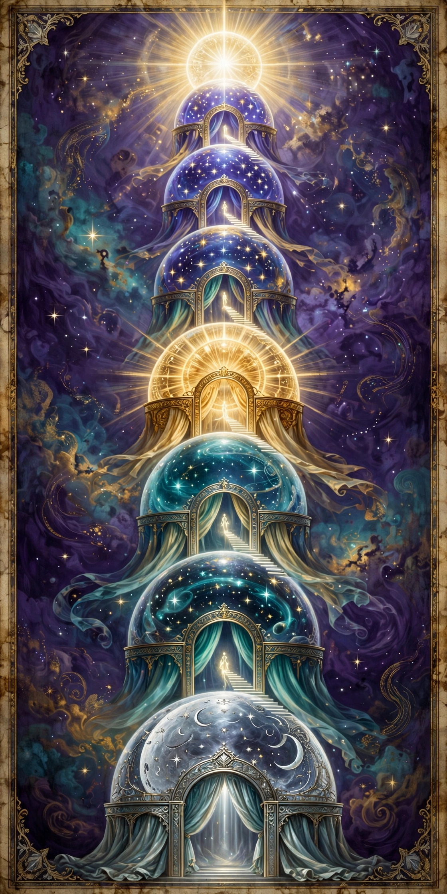
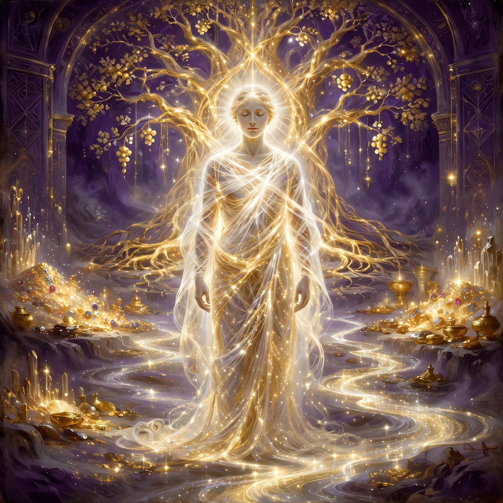

What the Road Looks Like
Five questions every traveler asks sooner or later: What do the gates look like? Are there other worlds? Will we ever see God? Do we keep our bodies? And what is the Monad, the One?
🌀 What do the gates look like?
The books never draw a blueprint, but the picture they build is consistent. Think of the sky as stacked shining domes — the moon's sphere, then the wandering stars, then the sun, then the fixed stars — and set into each dome a gate like a toll booth or a customs post, with curtains, a throne, and watchers. The Apocalypse of Paul literally calls the keepers toll collectors who check your accounts.
And in the Ophite diagram the keepers have animal faces — a lion, a bull, a dragon, an eagle, a bear, a dog, an ass — which is why the lion-faced Ialdabaoth waits at the top. The lower gates are dark checkpoints. The higher you climb, the more the gates themselves are made of light, until the last ones are just brightness with a voice in it.


🌌 Other worlds: levels, not places
Are there other worlds out there? In this map, yes — but they are levels, not places. Not other planets in the sky. Floors of one building.
From the bottom: this world, under the domes, where fate runs and bodies are born and die. Above the domes, the middle region — the Middle Rest, where awakened souls wait together outside the fate sphere's clock. Above that, the eighth sphere, the Ogdoad, where Sophia waits for her children to be gathered. And beyond everything, the Pleroma, the Fullness — which is not a world like this one at all: no fate, no clock, no bodies, no death. The books were never mapping the stars. They were mapping the way out of the building — and only the top floor is outside the prison.
👁️ Will we ever see God?
The Gnostic answer is careful: the Father himself, no — not as a face. He is called the Invisible Spirit; even the aeons can't fully take him in. Only the Son is his visible image.
What the saved actually get is to dwell inside his Light — and in these books, "seeing" and "knowing" are the same act. You don't look at the Light. You stand in it, wearing it, and that standing-in-it is the seeing.
✨ Bodies, or beings of light?
Not flesh — the flesh body is the tomb, and it stays in the ground. On the road up, the soul travels in a thinner "soul garment," and near the top even that gets laid aside. What goes home is the spirit dressed in a garment of light: you still have a shape, you are still you, recognizable — but the shape is woven out of brightness. No hunger, no decay, no death.
So not a formless cloud of energy either — a light-body, with the garment giving it form. The Gospel of Philip is blunt about it: flesh does not inherit the kingdom; the perfected are clothed in light.

💙 The Monad — and the "Blue Ray" question
Half of that phrase is ancient and half is not. Monad is real and central — the Apocryphon of John opens with it: "The Monad is a monarchy with nothing above it." The Monad is the One, the Father himself, the single source everything flows from.
But "Blue Ray beings" do not appear in the ancient texts — that is modern starseed teaching, from the last few decades, borrowing the old word Monad. The ancient books do have ranks of light-beings — the aeons, and the four great Luminaries who stand around the Son:
Their light is described as white and gold, beyond color — not blue.